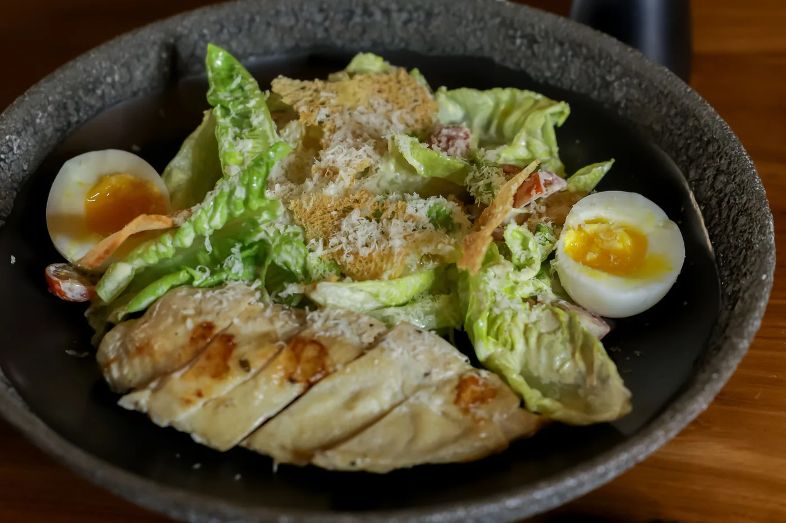
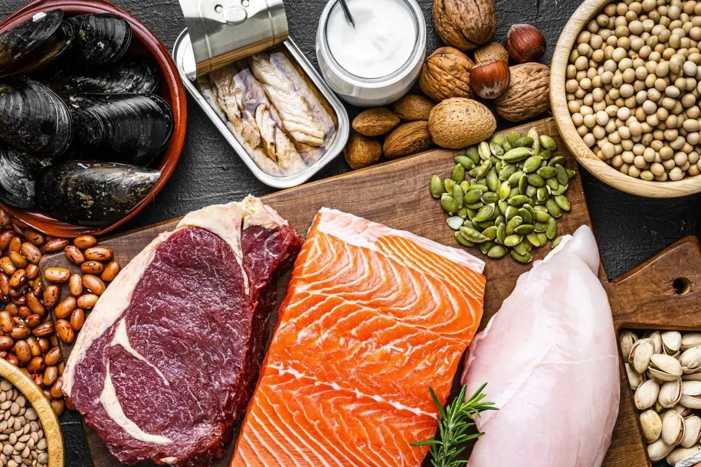
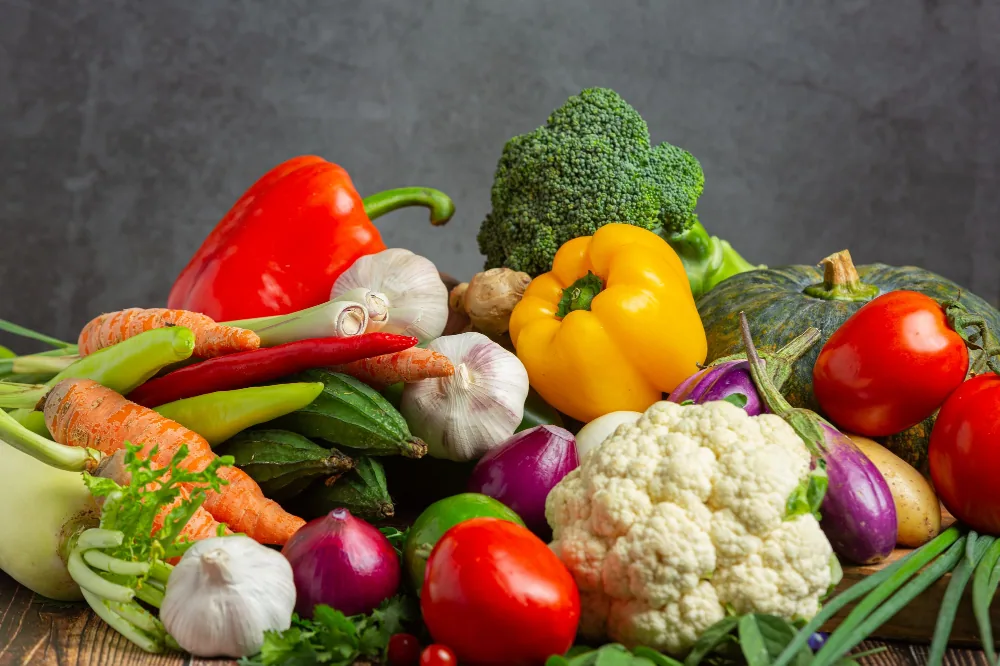
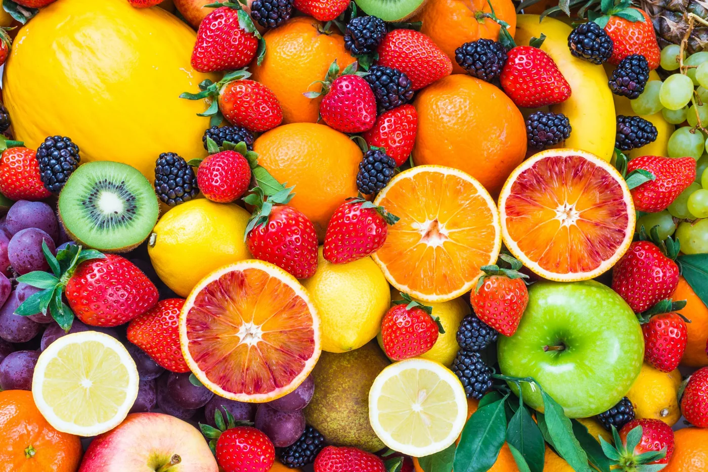
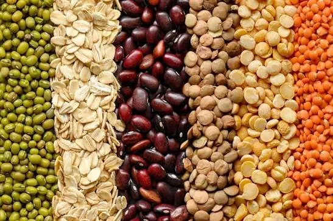
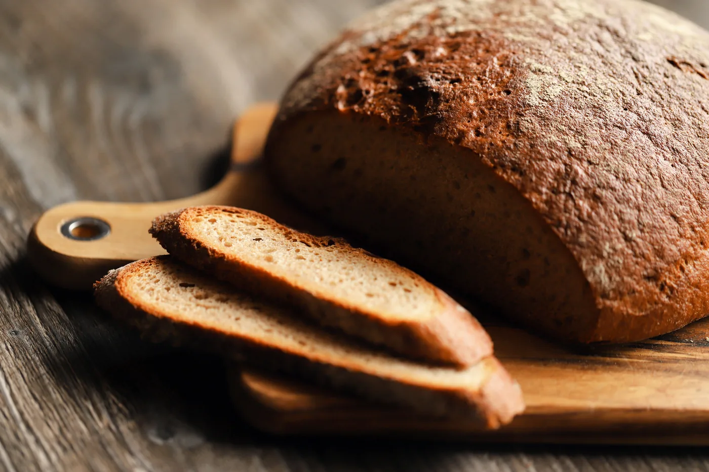
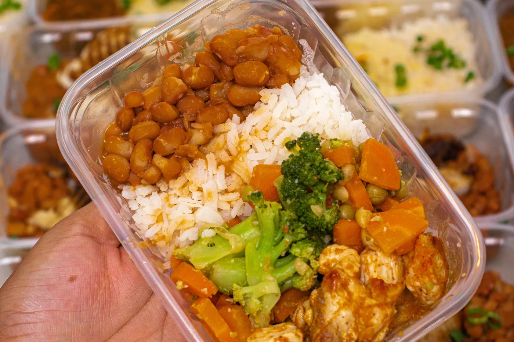

Será que emagrecer depende mesmo de um alimento específico?

Se você já pesquisou na internet o que comer para emagrecer, provavelmente encontrou listas enormes com alimentos "proibidos" e outros considerados "milagrosos".
Tem quem diga que é preciso cortar o pão. Outros garantem que o segredo está no jejum intermitente. Há ainda quem elimine completamente o arroz ou as frutas por medo de engordar.
A resposta é não.
Nenhum alimento, isoladamente, faz uma pessoa emagrecer ou ganhar peso. O que realmente influencia a perda de gordura é o conjunto da alimentação e dos hábitos ao longo do tempo.
Isso não significa, porém, que todos os alimentos tenham o mesmo efeito no organismo. Alguns promovem mais saciedade, ajudam no controle da fome e facilitam a manutenção de um déficit calórico. Outros, por serem altamente palatáveis e pouco saciantes, podem favorecer o consumo excessivo sem que a pessoa perceba.
Neste artigo, você vai entender quais alimentos merecem mais espaço no prato quando o objetivo é emagrecer de forma saudável.
Antes de escolher os alimentos, entenda uma coisa
Muitas pessoas procuram o alimento perfeito para emagrecer. Na prática, ele não existe.
O que existe é uma alimentação composta, na maior parte do tempo, por alimentos nutritivos, que favorecem a saciedade e ajudam a manter um consumo energético adequado.
Isso significa que você não precisa eliminar completamente os alimentos de que gosta. O segredo está no equilíbrio.
Quando a alimentação é muito restritiva, a chance de abandoná-la costuma ser maior. Por outro lado, quando ela é variada, prazerosa e adequada às suas necessidades, torna-se muito mais fácil mantê-la no longo prazo.
1. Proteínas: as maiores aliadas da saciedade
Se existe um grupo de alimentos que merece destaque durante o emagrecimento, são as proteínas.
Elas ajudam a prolongar a saciedade, reduzem a fome entre as refeições e contribuem para preservar a massa muscular durante a perda de peso.
Além disso, o organismo gasta mais energia para digerir proteínas quando comparado aos carboidratos e às gorduras, um fenômeno conhecido como efeito térmico dos alimentos.
Boas fontes de proteína incluem:
- •ovos
- •frango, peixes e carnes magras
- •leite e iogurte natural
- •queijos com menor teor de gordura
- •feijão, lentilha e grão-de-bico
- •soja e derivados
Na prática: incluir uma fonte de proteína no café da manhã costuma ajudar a controlar a fome ao longo do dia.

2. Verduras e legumes: muito volume, poucas calorias
Você já reparou que um prato de salada costuma ocupar bastante espaço?
Isso acontece porque verduras e legumes têm alto teor de água e fibras, aumentando o volume da refeição sem acrescentar muitas calorias. Além disso, são excelentes fontes de vitaminas, minerais e compostos bioativos importantes para a saúde.
Não existe uma única verdura melhor do que outra. O mais interessante é variar as cores e os tipos ao longo da semana. Algumas boas opções são:
- •alface, rúcula, agrião e espinafre
- •couve
- •tomate, cenoura e abobrinha
- •chuchu e berinjela
- •brócolis e couve-flor
Quanto mais colorido o prato, maior costuma ser a variedade de nutrientes.

3. Frutas podem fazer parte do emagrecimento
Um dos maiores mitos da nutrição é que frutas engordam.
Na realidade, elas são fontes importantes de fibras, vitaminas, minerais e antioxidantes. Além disso, ajudam a substituir doces e sobremesas mais calóricas.
Entre as frutas com maior poder de saciedade estão:
- •maçã e pera
- •laranja e kiwi
- •mamão e morango
Isso não significa que banana, manga ou uva precisem ser evitadas. O mais importante é considerar a alimentação como um todo.

4. Leguminosas: pequenas, mas muito nutritivas
Feijão, lentilha, ervilha e grão-de-bico costumam ser lembrados apenas como acompanhamento. Mas eles podem ser grandes aliados do emagrecimento.
Esses alimentos oferecem uma combinação interessante de fibras, proteínas vegetais e carboidratos de digestão mais lenta, favorecendo maior saciedade. Além disso, fazem parte do padrão alimentar tradicional brasileiro e estão associados a uma alimentação de melhor qualidade.
Se você costuma excluir o feijão para emagrecer, talvez seja hora de repensar essa escolha.

5. Carboidratos não são inimigos
Poucos alimentos foram tão demonizados quanto os carboidratos. Mas a verdade é que eles são a principal fonte de energia do organismo.
O problema não está no arroz, na batata ou na mandioca. Está, muitas vezes, no excesso de alimentos ultraprocessados, bebidas açucaradas e porções maiores do que o necessário.
Quando consumidos em quantidades adequadas e preferencialmente em versões integrais ou minimamente processadas, os carboidratos podem fazer parte de uma alimentação voltada ao emagrecimento. Boas opções incluem:
- •arroz
- •batata, batata-doce e mandioca
- •aveia
- •milho e quinoa
O ideal é combiná-los com proteínas, legumes e verduras para aumentar a saciedade da refeição.

E quais alimentos vale a pena reduzir?
Mais importante do que pensar em alimentos proibidos é observar aqueles que costumam ser consumidos em excesso e oferecem pouca saciedade. Entre eles estão:
- •refrigerantes e bebidas açucaradas
- •biscoitos recheados e doces industrializados
- •salgadinhos
- •fast food
- •embutidos
- •produtos ultraprocessados em geral
Isso não significa que eles nunca possam ser consumidos. A diferença está na frequência e na quantidade.
Uma alimentação saudável comporta flexibilidade.
Um prato simples costuma funcionar melhor do que uma dieta complicada
Quando pensamos em emagrecimento, muitas vezes imaginamos receitas elaboradas ou ingredientes difíceis de encontrar. Mas, na prática, um prato tradicional brasileiro pode ser extremamente nutritivo.
Uma refeição composta por arroz, feijão, uma fonte de proteína, legumes e salada costuma fornecer proteínas, fibras, carboidratos, vitaminas e minerais em uma combinação equilibrada.
Não é preciso complicar a alimentação para alcançar bons resultados.

Em resumo
Se você procura o que comer para emagrecer, talvez a pergunta mais importante seja outra:
Como montar uma alimentação que eu consiga manter pelos próximos meses?
Em vez de buscar alimentos milagrosos ou dietas da moda, priorize refeições equilibradas, com boa quantidade de proteínas, fibras, frutas, verduras, legumes e alimentos minimamente processados.
Pequenas mudanças, quando mantidas de forma consistente, costumam trazer resultados muito maiores do que estratégias radicais seguidas por pouco tempo.
Perguntas frequentes
Existe algum alimento que faz emagrecer?
Não. Nenhum alimento isoladamente promove perda de gordura. O emagrecimento depende do conjunto da alimentação e dos hábitos de vida.
Posso comer pão durante o emagrecimento?
Sim. O pão pode fazer parte de uma alimentação equilibrada, desde que esteja inserido dentro das necessidades energéticas e nutricionais da pessoa.
Comer frutas à noite engorda?
Não. O horário em que a fruta é consumida não determina o ganho de peso. O que importa é o contexto da alimentação ao longo do dia.
Preciso cortar carboidratos para emagrecer?
Não. Carboidratos podem fazer parte de um plano alimentar para emagrecimento. A quantidade ideal depende das necessidades individuais.
Vamos começar sua rotina?
Conheça o acompanhamento →Referências científicas
- World Health Organization (WHO). Healthy diet.
- Academy of Nutrition and Dietetics. Position of the Academy: Interventions for the Treatment of Overweight and Obesity in Adults.
- Dietary Guidelines for Americans.
- Hall KD, Kahan S. Maintenance of Lost Weight and Long-Term Management of Obesity.
- Monteiro CA et al. The UN Decade of Nutrition, the NOVA food classification and the trouble with ultra-processing.